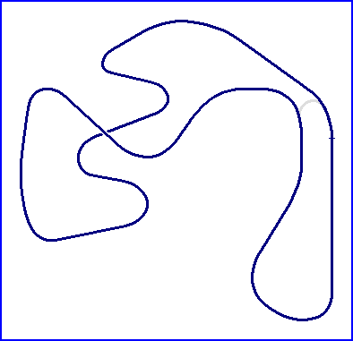

Ahvenisto

| Length | 1.783 Miles // 2.870 km |
| Direction | Clockwise |
Contact Information |
|
| Address | Ahveniston Moottorirata 13100 Hämeenlinna 10 |
| Telephone | +358 (0)679 1726305 |
| Website | http://personal.inet.fi/urheilu/ahvenisto |
racingcircuits.net - Lasted Updated: 16 October 2004 00:35:09 GMT Daylight Time
Data
Sources
Website - "Ahveniston Moottorirata - Fanisivusto" by Petri
Leskinen; http://personal.inet.fi/urheilu/ahvenisto
email - from Petri Leskinen on Tue 12/10/04 09:11
Book - "The Guinness Guide to International Motor Racing" by Peter
Higham; Guinness Publishing Ltd., Enfield, United Kingdom; ISBN 0-85112-642-1